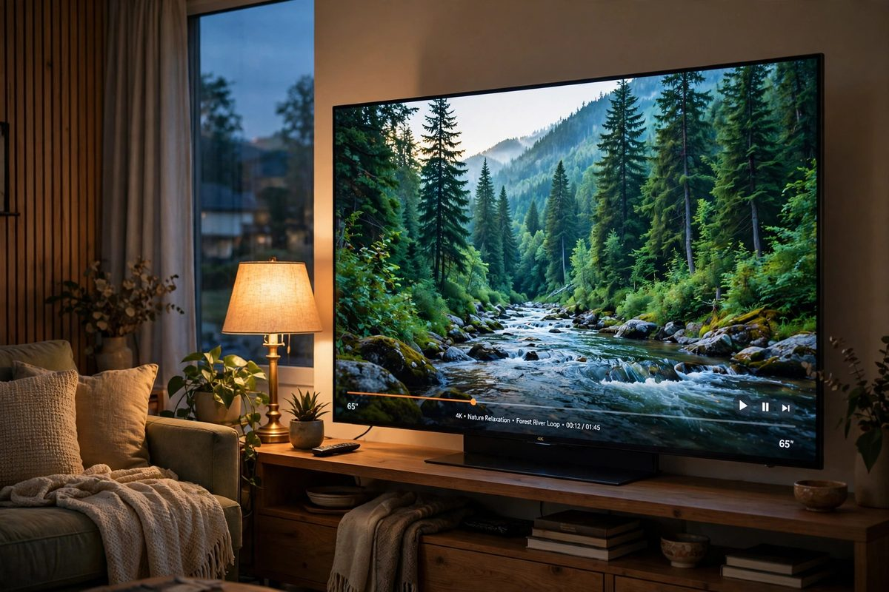

YouTube Video Quality Options Explained: 144p to 4K and What to Pick
What each YouTube quality setting means, how much data it uses, and which one to choose on phone, TV, or PC.
YouTube offers quality settings from 144p up to 2160p, also called 4K, and the right choice depends on your screen, your connection, and how much data you can spend. A small phone screen hides the difference between 720p and 1080p, while a big television exposes it immediately. This guide explains what each setting really means, roughly how much data each one uses per hour, and how to pick a setting that looks good without buffering or burning through your data plan.
What the numbers mean
The number in 720p or 1080p is the vertical resolution: the count of pixels from top to bottom. 144p is about 256 by 144 pixels, 360p is 640 by 360, 720p is 1280 by 720, 1080p is 1920 by 1080, and 4K is 3840 by 2160. Higher resolution means a sharper image, but only if your screen can display it and your connection can deliver it. YouTube also offers frame rates of 30 or 60 frames per second; 60fps looks smoother for gaming and sports. HDR videos add brighter highlights and richer colour on supported screens, but they also use more data.
Data use per hour
As a rough guide, 144p uses about 30 to 40 MB per hour, 360p around 200 to 300 MB, 480p about 400 to 500 MB, 720p roughly 900 MB to 1.5 GB, 1080p about 1.5 to 3 GB, and 4K can exceed 7 GB per hour. These figures vary with the content, because a fast-moving sports clip compresses less efficiently than a mostly static talking-head video. If you are on a limited mobile plan, the jump from 480p to 1080p is the most expensive step, and it is the one to avoid when data matters.
Choosing quality on each device
On a phone, 480p looks fine and 720p looks great; going higher rarely helps because the screen is small. On a laptop, 1080p is the sweet spot, and on a television larger than 50 inches, 1080p or 4K is worth it if your connection is fast. To set quality manually, tap the gear icon on the player, choose Quality, then Advanced, and pick a resolution. On mobile, the app also offers a Data Saver mode that caps quality automatically, which is handy when you are away from Wi-Fi.
Fixing buffering and blurry video
If a video looks blurry, it has probably started at a low quality while the connection is measured; wait a few seconds and it usually sharpens. If it stays blurry, open the quality menu and pick a higher setting manually. If it buffers, do the opposite: drop to 480p or 360p, close other apps using the network, or move closer to your router. On a smart TV, a wired Ethernet connection is more stable than Wi-Fi for 4K. Remember that Auto mode is a compromise, not a promise, and manual control is often better when you know your connection.
Auto quality versus manual control
YouTube's Auto setting is a compromise: it guesses the best quality for your connection moment by moment, raising it when the network is fast and dropping it when it slows down. That is convenient, but it is not always what you want. If you are watching a detailed tutorial where small text matters, Auto may drop to 480p at the worst moment and make the text unreadable. If you are listening to a lecture where the picture hardly matters, Auto may waste data on 1080p you do not need. The fix is to set quality manually when the content matters: pick 1080p for tutorials and demonstrations, and 360p or 480p for talks and podcasts. On mobile, the app also has a data-saver option that caps quality on mobile data while allowing full quality on Wi-Fi, which is the best of both worlds. Check the setting once, and you will not have to think about it again.
Frequently Asked Questions
What quality should I use on mobile data?
360p or 480p is usually enough on a phone screen and uses far less data than 720p or 1080p.
Why does YouTube keep changing my quality?
Auto mode adjusts quality to your connection speed. A weak or busy connection drops the quality to avoid buffering.
Is 4K worth it?
Only on a large 4K screen with a fast connection. On a phone, the difference between 1080p and 4K is barely visible.